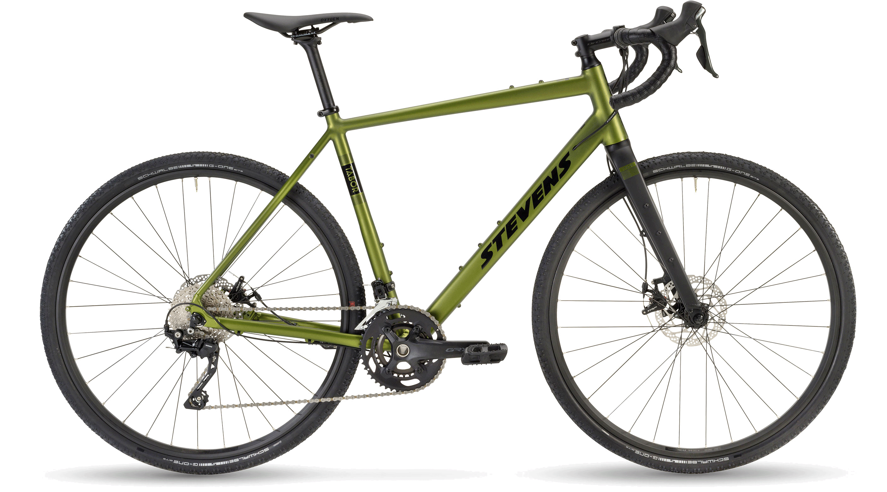
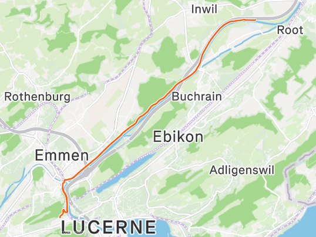

Horwerhalbinsel
Distanz: 25.08km
Zeit: 1:25:51
Höhenzunahme: 268m
Durchschnittsgeschwindigkeit: 21.3 km/h
Mein Lieblingsobjekt
Ein persönlicher Blick auf mein STEVENS Gravel Bike.

Warum Tabor?
Ich wollte ein Fahrrad, das mich nicht auf eine bestimmte Strecke festlegt. Eines, mit dem ich spontan losfahren, neue Wege entdecken und den Alltag hinter mir lassen kann. Genau das habe ich im Stevens Tabor gefunden.
Seine Vielseitigkeit, die durchdachte Ausstattung und das schlichte Design machen es für mich zum idealen Begleiter – egal, ob auf Asphalt, Schotterwegen oder längeren Touren. Dabei überzeugt mich nicht nur, was das Tabor kann, sondern auch, wie es aussieht. Die Farbe Earth Green und die klare Formgebung waren für mich von Anfang an ein entscheidender Teil der Wahl.
Die technischen Eigenschaften bilden dabei die Grundlage für das, was ich an diesem Fahrrad schätze: Freiheit, Flexibilität und die Möglichkeit, einfach loszufahren. Die wichtigsten Details zeigen, weshalb das Tabor für mich genau die richtige Wahl ist.
Distanz: 25.08km
Zeit: 1:25:51
Höhenzunahme: 268m
Durchschnittsgeschwindigkeit: 21.3 km/h

Distanz: 22.43km
Zeit: 1:07:09
Höhenzunahme: 124m
Durchschnittsgeschwindigkeit: 23.2 km/h

Distanz: 42.93km
Zeit: 2:15:22
Höhenzunahme: 494m
Durchschnittsgeschwindigkeit: 21.4 km/h